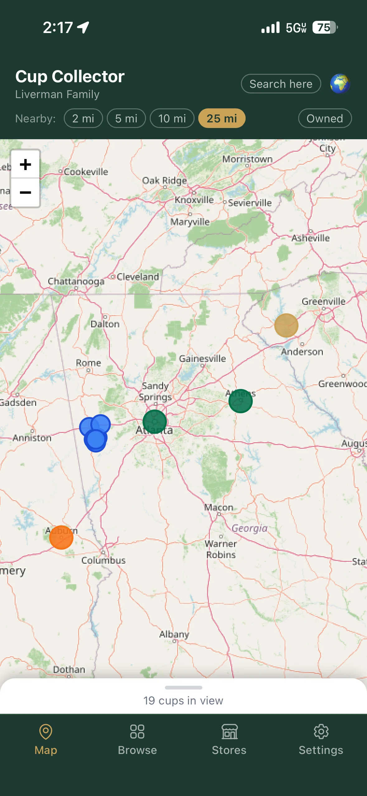
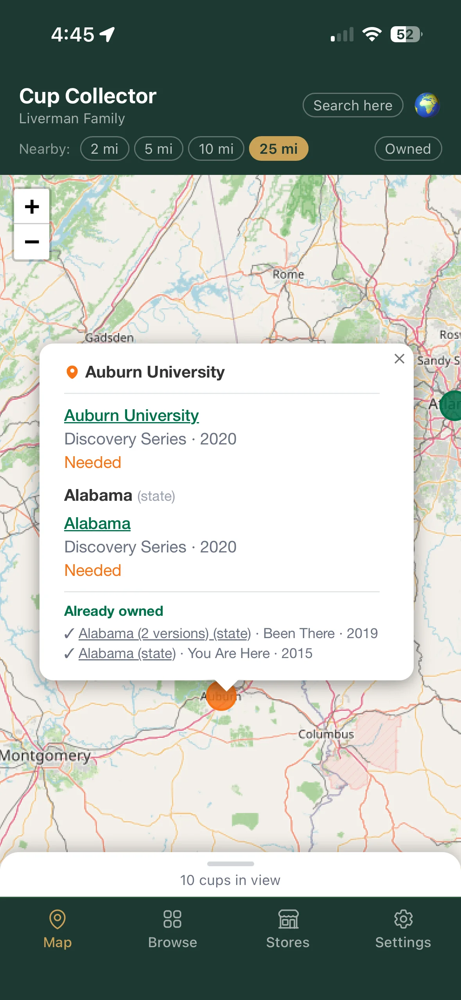
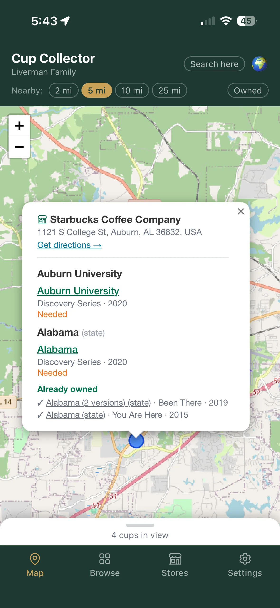
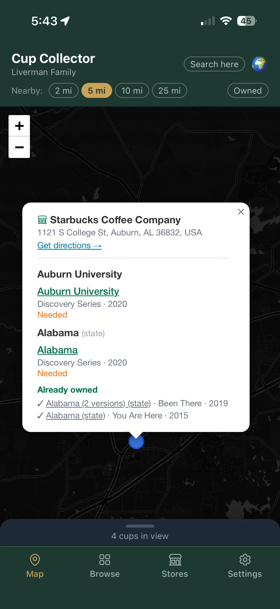
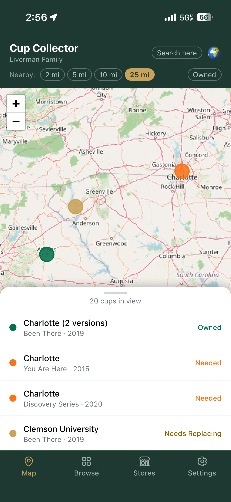
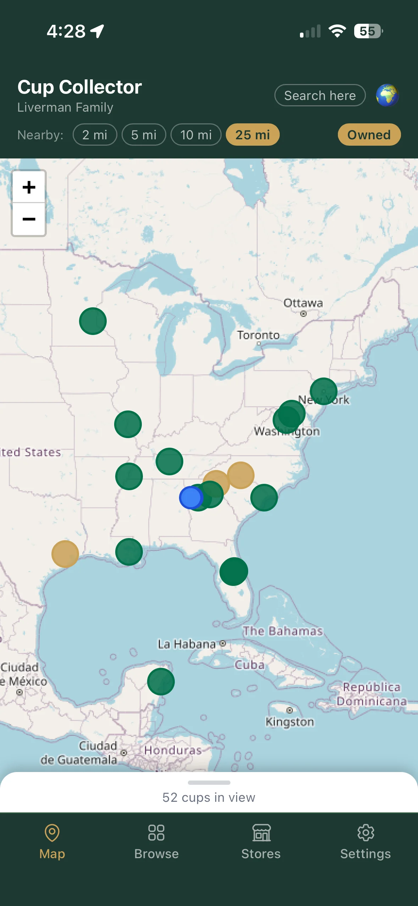
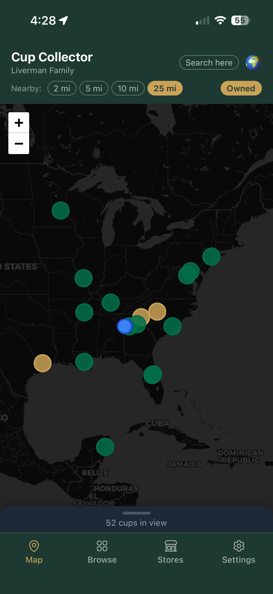

The map is the default home screen. It gives you a visual overview of the entire collection and nearby Starbucks stores.
Pin colors
Green — a cup you own, in good condition
Gold — a cup you own that needs replacing
Orange — a cup you still need
Blue — a nearby Starbucks store
Pulsing blue dot — your current location

All pin colors visible — green (owned), gold (needs replacing), orange (still needed), blue (Starbucks stores)
Zooming and navigating
Pinch to zoom in and out, or use the + / − buttons.
Drag to pan the map.
Tap the globe button (top-right of the header) to zoom out to a world view of your entire collection.
When the app first opens, the map automatically zooms to your current location if you've allowed location access.
Tapping pins
Tap a cup pin (green, gold, or orange) — opens a popup with the cup name, series, and year. Tap "View details" to go to the full Cup Detail screen. City cup popups also list any themed cups associated with that location.
Tap a Starbucks pin (blue) — opens a popup with the store name and address, a list of cups you still need that might be sold there, and a "Get directions" link that opens Apple Maps.

Tapping an orange pin — the popup shows what's needed and what you already own at that location

Tapping a blue Starbucks pin — light mode

Dark mode
Themed cups have no map pin
Themed cups (Star Wars, Discovery Series, etc.) are not tied to a specific location, so they don't appear as their own pins. They show up inside the popup of the nearest city cup instead.
Cups in view
A collapsible bottom sheet is always present at the bottom of the map screen. It shows a handle labeled "X cups in view" — the number of cup pins visible in the current map viewport.
Tap the handle to expand the panel. It lists every cup currently visible on the map — owned (green), needing replacement (gold), and still needed (orange) — with a ⚠ Needs replacing label in gold for any cups flagged with condition issues. Tap any row to open that cup's detail screen.
The count and list update automatically as you pan or zoom.

Bottom sheet expanded — the gold "⚠ Needs replacing" label identifies cups that need attention
Showing only owned cups
Tap the Owned chip in the map header to hide all unowned cup pins and show only the cups already in your collection. The chip turns gold when active. Tap it again to restore the full view.
This is useful for quickly seeing your collection's geographic spread, or for checking which cups you already have before visiting a new city.

Light mode

Dark mode
Location permission
The app asks for your location when it first opens. If you allow it:
The map centers on where you are.
A pulsing blue dot marks your position.
Nearby Starbucks stores appear as blue pins.
The Browse screen sorts unowned cups near you to the top.
If you deny location permission, the app falls back to a world map view. There are no broken screens or error messages — the app works normally, just without the location features.
Changed your mind about location?
On iPhone, go to Settings → Privacy & Security → Location Services. If you installed Cup Collector as a PWA (home screen app), look for its entry directly in the list. If you haven't installed it yet, find Safari and set it to "While Using", then reload the app.
Nearby Starbucks
When location is active, the app automatically finds Starbucks stores near your position using Google's Places service — all server-side, so your exact location is never sent directly to Google. Blue store pins appear on the map.
Use the radius chips in the header (e.g. 5 mi, 10 mi, 25 mi) to control how far out to search. Changing the radius re-runs the search automatically.
Tap any store pin to see its name, address, a list of cups you might find there (city cups within range, state cups matching the store's state, country cups matching its country), and a "Get directions" link.
Searching a different area
Pan or zoom the map to any area, then tap "Search here" (top-right of the header) to find Starbucks stores centered on the current map view. This overrides your GPS location for the store search — useful when planning a trip or exploring an unfamiliar city.
Tapping a radius chip clears the manual search and returns to GPS-based results.